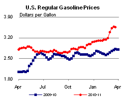
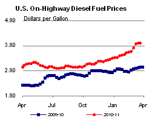
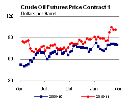
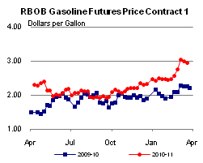
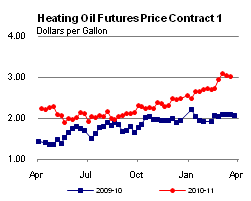
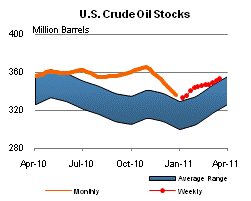
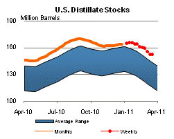
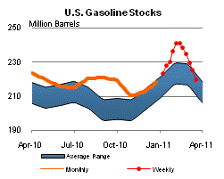
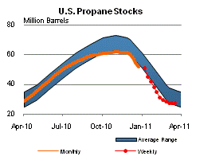

Released: March 23, 2011
Next Release: March 30, 2011
Japan and Libya: Different Impacts on World Markets
The human suffering and dislocation caused by the recent events in Libya and Japan, whether due to violent conflict or natural disaster, is both broad and widely felt. While our thoughts focus mainly on prospects for bringing resolution and relief to those affected, both Libya and Japan, each in its own way, are vital links in the global energy supply chain. The disruption to normal economic and productive activities in both countries carries worldwide consequences.
While the events in both Libya and Japan represent a continuing thread of uncertainty, there is also a clear contrast stemming from the two countries' differing roles in the global energy system. Libya's importance to world oil markets derives primarily from its role as North Africa's second largest producer of crude oil and liquids (1.8 million barrels per day (bbl/d) in 2010), and as a net exporter of high quality crude oil, mostly -- though not exclusively -- to the European market. Japan looms large mostly as a consumer of crude oil and refined products and other energy inputs. Libya is a supply story, whereas Japan is mainly about demand.
The questions in Libya are how long the fighting will last, whether the production infrastructure will suffer any lasting damage, and what type of energy landscape will emerge from the confrontation. So far, buyers of Libyan oil - for the most part, European refiners - have been able to muddle through and do without. But it is becoming increasingly clear that this is more than a passing crisis, and the market will need to make adjustments for the longer term.
Japan is an industrial behemoth and the world's third largest oil consuming economy behind the United States and China, with 2010 estimated oil consumption averaging 4.4 million bbl/d. While the earthquakes and tsunami have spared its industrial heartland, the nation's entire economy has been affected - as have been, to an extent still unclear, the many economies that depend on it for inputs or as an outlet for their own production. Initial assessments suggest the market impact will likely be two-tiered. First, the disaster will cause a temporary reduction in Japanese oil demand, partly offsetting the Libyan supply shortfall. While market attention has been focused on the nuclear power generation infrastructure, the scope of the damage is broader and includes thermal power generation, refineries, factories, ports, roads, and other transport logistics that directly affect the use and movement of oil.
In the longer term, however, market expectations are that the Japanese disaster will cause oil demand to rebound in order to support reconstruction efforts when they get underway and make up for some part of the loss in nuclear power generation. What is less clear is the timing of the transition from phase one to phase two of the quake's aftermath - i.e., the expected bottom in Japanese oil demand.
The recent supply disruption in Libya and the subsequent near-term disruption of oil demand in Japan have sent crude oil prices on a roller coaster. On February 14, just before major demonstrations began in Libya, the spot price of Brent stood at $103 per barrel. In the wake of the Libyan uprising, by March 2, Brent increased almost $14 per barrel, before retreating almost $6 per barrel on the back of the Japanese earthquake and tsunami, only to regain some of the lost ground more recently as the Libyan confrontation intensified.
But the impact on U.S. retail product prices has been more subdued and nuanced. Gasoline prices generally reflect movements in crude oil prices, but over the last two weeks, national gasoline retail prices have remained relatively flat. This is because it takes some time for the full effect of crude oil price changes to be reflected in retail gasoline prices. Typically, a $10 increase in the price of a barrel of crude oil translates into an increase of about 24 cents in the retail price of a gallon of gasoline over the course of about eight weeks. About half of that increase generally takes place within two weeks. Thus, a portion of the sharp crude oil price increase that happened weeks ago in the wake of the first Middle East headlines is still working its way through retail prices.
Thanks to that lag, the remaining upward price effect of the Middle East news has been largely offset by the more recent downward impact of the Japanese disaster and expectations of reduced demand, resulting in flat retail prices. If there were no significant changes in current crude oil prices, our gasoline pricing pass-through analysis suggests that over the next several weeks, we would see no further pressure from crude oil prices. However, we would expect to see price increases due to seasonal changes such as the shift from winter to more expensive summer-grade gasoline.
Price pressures resulting from events in Libya and elsewhere are occurring in the context of a recent recovery in U.S. gasoline fundamentals. Monthly data show gasoline product supplied increased year-on-year in eight of the last nine months of 2010, averaging 93,600 barrels per day higher than 2009 over that period. While severe winter weather may have temporarily affected gasoline demand this winter (for additional discussion of this point, see the February 24 installment of Today in Energy), this may not signal a reversal of the recent trend.
The Short-Term Energy Outlook to be released on April 12 will present a detailed summer fuel outlook including an in-depth assessment of the U.S. gasoline market for the peak driving season.
Retail diesel price logs first decrease of 2011
The U.S. average retail price of regular gasoline decreased half of a cent versus last week, the first decline since January 31, 2011. At $3.56 per gallon, gasoline is $0.74 per gallon higher than last year at this time. The biggest decrease was on the Gulf Coast, where the gasoline price fell almost two cents. The gasoline average on the East Coast lost a penny on the week and the Midwest price was down just under a cent. Moving in the other direction, the West Coast average moved up about two cents. In the Rocky Mountains, the price was almost three cents higher than last week. Despite this increase, the gasoline price in the Rocky Mountains remained the lowest in the country at $3.39 per gallon. The most expensive gasoline among the major regions is on the West Coast, where the average retail price is $3.86 per gallon.
Diesel prices fell for the first time in sixteen weeks, albeit a small decrease, with the national average down just a tenth of a cent from last week. At $3.91 per gallon, the diesel price is $0.96 per gallon higher than last year at this time. Diesel prices were mixed across the country, with prices falling less than a penny on the East Coast, Gulf Coast, and in the Midwest. Prices in the Rocky Mountains were up almost four cents. The average on the West Coast was also up on the week, adding over a penny to last week's price.
Propane stocks draw down slightly
Total U.S. inventories of propane took a slight draw of inventories last week, falling 0.4 million barrels to end at 27.0 million barrels. The East Coast regional stocks dropped by 0.2 million barrels. The Midwest and Rocky Mountain/West Coast regional stocks were both down by 0.1 million barrels. The Gulf Coast regional inventories fell slightly. Propylene non-fuel use inventories represented 7.8 percent of total propane inventories.
Text from the previous editions of This Week In Petroleum is accessible through a link at the top right-hand corner of this page.
|  |  | ||||||
| Retail Data | Changes From | Retail Data | Changes From | ||||
| 03/21/11 | Week | Year | 03/21/11 | Week | Year | ||
| Gasoline | 3.562 | Diesel Fuel | 3.907 | ||||
|  |  | ||||||||||||||||||||||||||
|
 | ||||||||||||||||||||||||||
| *Note: Crude Oil Price in Dollars per Barrel. | |||||||||||||||||||||||||||
|  |  | ||||||
|  |  | ||||||
| Stocks Data | Changes From | Stocks Data | Changes From | ||||
| 03/18/11 | Week | Year | 03/18/11 | Week | Year | ||
| Crude Oil | 352.8 | Distillate | 152.6 | ||||
| Gasoline | 219.7 | Propane | 27.001 | ||||